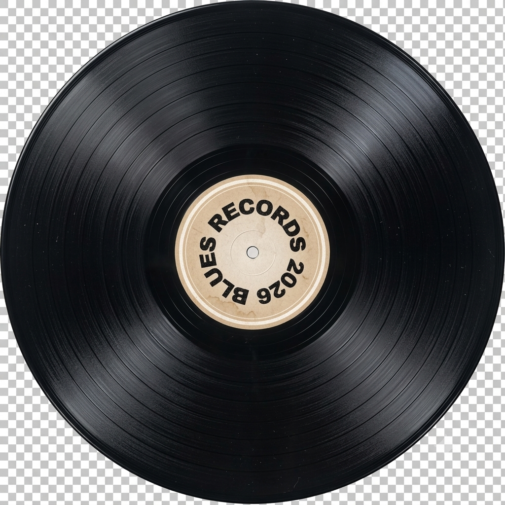

Una plataforma interactiva que usa el poder terapéutico de la música para acompañarte en tu bienestar emocional, adaptada a ti.
"La música expresa lo que no puede ser dicho y aquello sobre lo que es imposible permanecer en silencio." — Victor Hugo

— El origen de Blue's
Blue's nació con la idea de acercar la musicoterapia a más personas de una forma sencilla, humana y accesible. Creamos este espacio para acompañar diferentes momentos emocionales mediante sesiones y selecciones musicales pensadas para cada estado de ánimo.
La música no sustituye la atención de un profesional, pero puede convertirse en una herramienta de apoyo para relajarse, expresar lo que sentimos, recuperar recuerdos y encontrar un momento de calma.
— Servicios y beneficios
Dirigido a: Niños con TDAH, autismo (TEA) o retraso en el lenguaje.
Beneficios: Mejora la atención, estimula la comunicación y facilita la expresión emocional.
Dirigido a: Gestantes a partir del segundo trimestre y sus parejas.
Beneficios: Fomenta la calma, la conexión familiar y la expresión de emociones durante el embarazo.
Dirigido a: Personas con ansiedad, depresión o estrés laboral.
Beneficios: Ayuda a reducir la tensión, fortalece la calma y acompaña distintos procesos emocionales.
Dirigido a: Adultos mayores y personas con Alzheimer o demencia temprana.
Beneficios: Evoca recuerdos, mantiene la agilidad mental y fomenta la socialización.
— Quiénes somos
Somos un grupo de estudiantes apasionados por la tecnología, la música y el bienestar emocional. Creamos Blue's para acercar la ayuda emocional de una forma más humana, creativa y accesible.